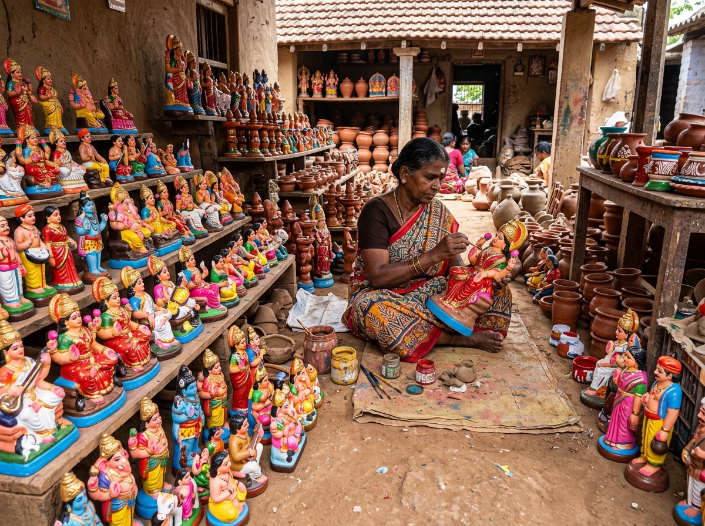
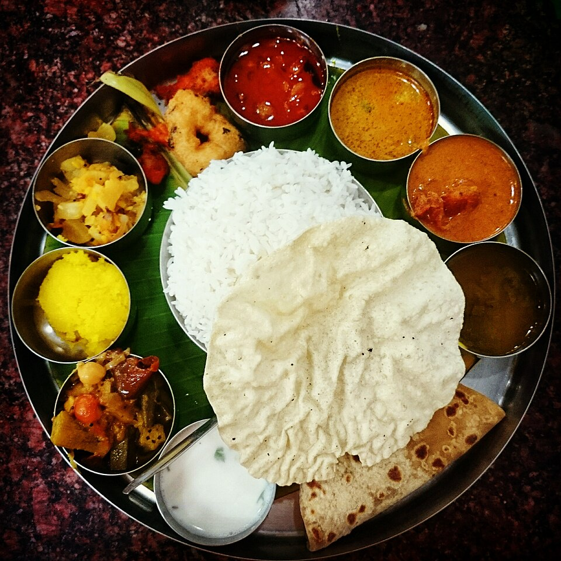

FUNCTIONAL CSR IN PRACTICE
The "Support Local" Feature in Action
On our website, CSR is not merely passive text. Every food delicacy, restaurant, temple, and artisan workshop features a dedicated "💚 Support Local" action button that reveals the direct community impact, fair payment guidelines, and indigenous family livelihoods supported. Try it below:
 COMMUNITY HERO
COMMUNITY HERO
Famous Jigarthanda
East Marret Street
₹60 – ₹140
Supports local dairy herds, tribal badam pisin collectors, and native nannari root suppliers.

INDIGENOUS GUILDVilachery Pottery Village
Thirupparankundram Taluk
Free Entry
Over 200 artisan families hand-sculpting clay Golu idols, terracotta horses, and earthen cookware.

HERITAGE MESSAmma Mess
West Perumal Maistry St
₹180 – ₹450
Inventors of bone-marrow omelettes and Kari Dosa, sustaining regional spice farmers on banana leaves.